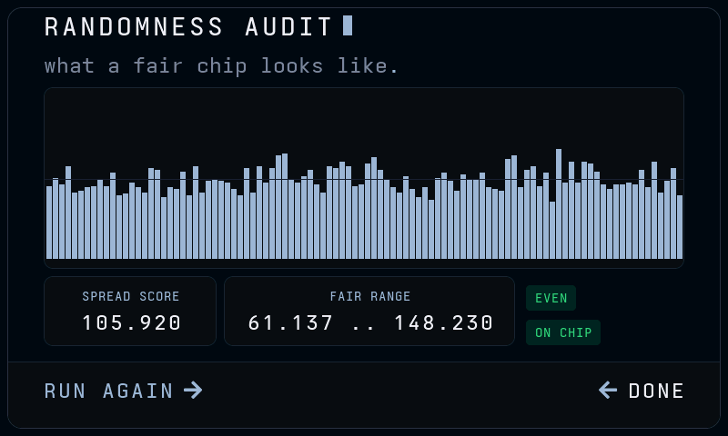
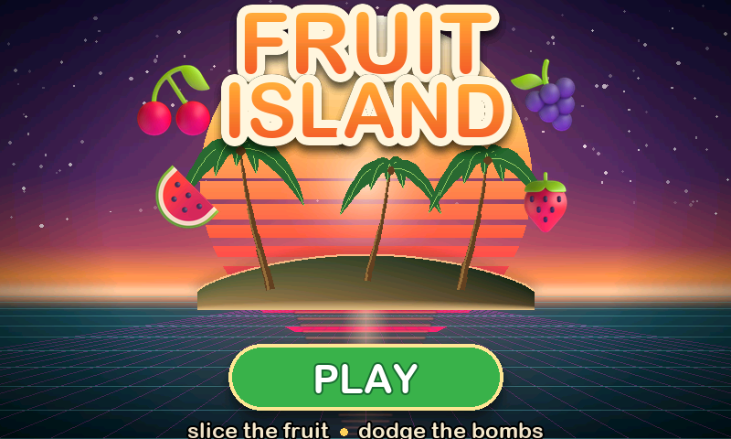
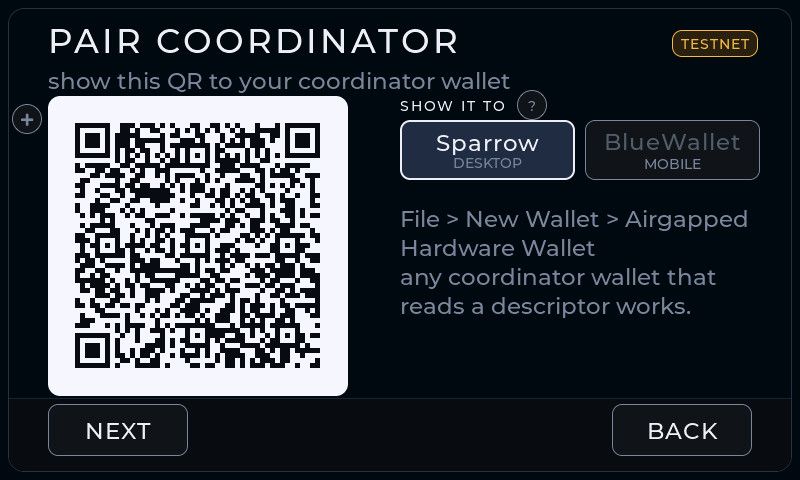
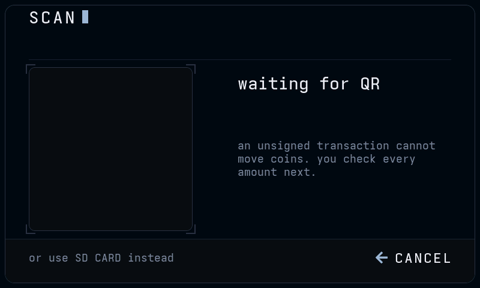
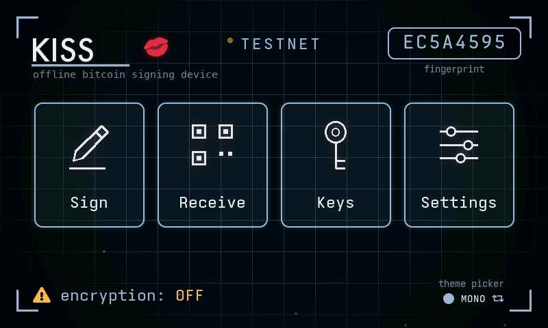
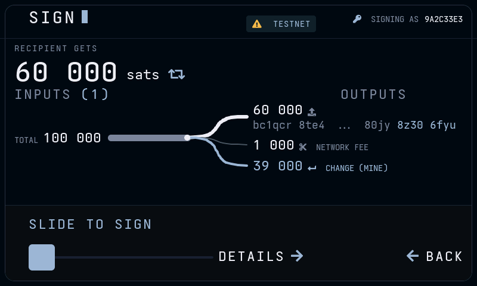
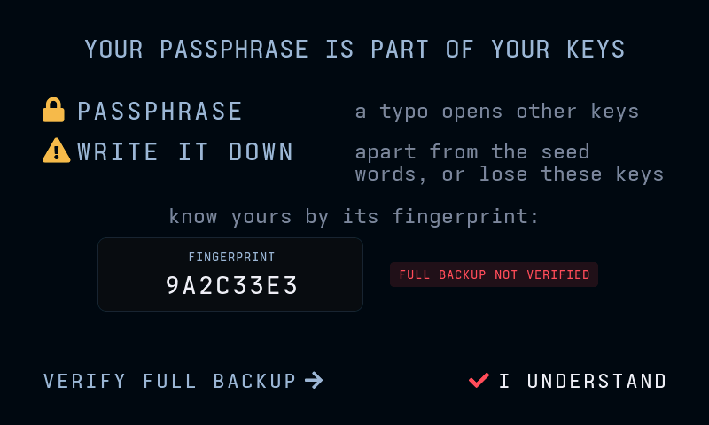
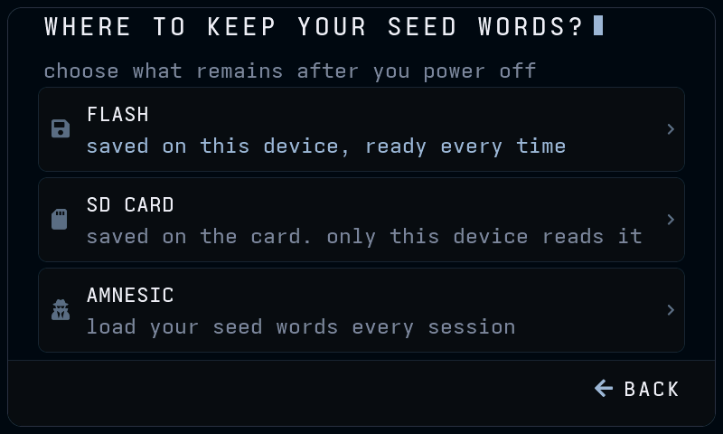

DECOY SIGNER
It boots into a game
It starts up as FRUIT ISLAND, a real game you can play. One secret drawing opens your real keys and another opens decoy keys, so there is always something to show.
01 / start here
Your keys never leave this device. The part that goes online is a separate app on your phone or computer, called a coordinator.
KISS-signer shows a QR of your public keys (a descriptor or a zpub). Your coordinator scans it, then shows your balance and gives out addresses, but it cannot spend.
It picks the coins and the fee and makes a PSBT: a transaction with no signature yet.
Move the PSBT to the signer by QR or microSD. KISS-signer works out every amount itself, shows you, and signs only when you hold the sign button.
Move the signed transaction back the same way, and the coordinator sends it to the network.
Pairing has screens for Sparrow and BlueWallet. Other coordinators work too if they can import a watch-only descriptor and move PSBTs by QR or microSD. Not sure about yours? Ask in Telegram.
02 / features
It starts up as FRUIT ISLAND, a real game you can play. One secret drawing opens your real keys and another opens decoy keys, so there is always something to show.
A transaction is too big for one QR code, so KISS-signer splits it into numbered codes and plays them in a loop for your coordinator’s camera (this is called BC-UR). Or move the file on an SD card. No cable ever carries your data.
1 / 5
One address, starting sp1, that you can give out again and again without the privacy cost of reusing an address. An optional scan key lets your coordinator find those payments, but never spend them.
The signer works out every amount, the fee and the change itself instead of trusting the coordinator. Anything risky turns amber before you can sign.
Each with its own font, and buttons resize so no word gets cut off.
Keys are only as good as the randomness behind them, so the signer tests its own: it draws 5000 random numbers from the chip, charts them live and scores how even they are. A lopsided chart means bad randomness.

03 / the device
Three boards, no soldering: the Guition JC4880P443C (4.3in), the Waveshare ESP32-P4-WIFI6-Touch-LCD-3.5 (3.5in) and the Guition JC1060P470C (7in). Each has a colour touchscreen, a camera and a microSD slot. The one job left to you is making sure the camera faces out the back, away from you.
Where to buy: the Waveshare board from Waveshare or a Waveshare distributor in your country; the Guition 4.3in from AliExpress; the Guition 7in by searching AliExpress or Amazon for its model number. Check the chip below before you buy.
The firmware runs on boards with a v1.x ESP32-P4 chip. Boards with
the newer v3.x chip are not supported yet. To see which you have,
esptool prints the chip revision when it connects.
The main chip, the ESP32-P4, has no WiFi or Bluetooth at all. The board does carry a second chip that has them, because the board is sold for other products too. Switching that chip off (holding it in reset) is the very first thing KISS-signer does, and it contains no wireless code. The switch is in software, not a hardware cut: it relies on KISS-signer’s own firmware, and for a split second at power on, before that firmware starts, the radio chip can start up by itself.
You can check it yourself. The home screen and Settings show
radio: held in reset, read live from the chip every
time. With a multimeter, pin GPIO54, the radio’s off
switch, reads zero volts.
On the Guition 4.3in the camera comes facing you. To scan QR codes from your coordinator it has to face out the back. Simple but fiddly:
04 / trust, then flash
Everything for a release sits on the GitHub Releases tab:
kiss-signer-<version>.bin: the firmware for the Guition 4.3inkiss-signer-<version>-ws35.bin: the firmware for the Waveshare 3.5inkiss-signer-<version>-jc1060.bin: the firmware for the Guition 7inSHA256SUMS: the hashes of those filesSHA256SUMS.asc: the signature on those hasheskiss_signer_pgp.asc: the key that signed them
Beside them, kiss-signer-<version>-offline.zip
carries the same firmware with an install page and this guide, for
flashing with no network. It has its own signature.
gpg --import kiss_signer_pgp.asc
gpg --verify SHA256SUMS.asc SHA256SUMS
shasum -a 256 --ignore-missing -c SHA256SUMS # macOS
sha256sum --ignore-missing -c SHA256SUMS # LinuxCheck one line: the key fingerprint gpg prints must read exactly:
166A CBF3 7786 FCEA A694 96DE 886F 1BFE B84E F1C0
One warning looks alarming but is normal:
WARNING: This key is not certified shows for every key
you have not signed yourself. What proves the key is the
fingerprint, not the name on it.
Also check this fingerprint somewhere other than this page, in case the page itself was tampered with.
Hash with Get-FileHash firmware\kiss-signer-<version>.bin
(-ws35.bin on the Waveshare 3.5in, -jc1060.bin
on the Guition 7in)
in PowerShell and compare against SHA256SUMS by eye. Verify the
signature with Gpg4win.
The install page, including the one in the offline zip, checks the firmware’s hash in your browser before it lets you flash. It does not check the GPG signature, so do that yourself once per release.
05 / no cable, no computer
On beta8 or later this is the easiest way to update: the signer installs new firmware from an SD card, with no cable and no computer.
From the latest release, drop the file ending -update.bin in the top level of an SD card. That is the whole preparation.
Each board has its own file: -ws35-update.bin for the
Waveshare 3.5in, -jc1060-update.bin for the Guition 7in,
and the one with no board name for the Guition 4.3in. From beta11 on,
the signer refuses another board’s file. Beta10 does not check,
so take care; if the screen stays dark after a wrong one, turn it off
and on and it goes back to its old firmware.
-update.bin file, not the plain
.bin. The plain one is for flashing over USB, and with it
the signer says there is nothing to install.
Put the card in, then on the signer go to SETTINGS → FIRMWARE and hold to install.
Before writing anything, it checks the file’s two signatures against keys built into the signer, so a file we did not sign is refused. If the new firmware fails to start, the signer goes back to the old one by itself.
This way keeps your keys and settings. The browser install erases everything, so use it only for a new device.
06 / esptool, over usb
Safari and Firefox will not let a web page reach USB, which is why the install page needs Chrome or Brave. This does the same job from a terminal.
One tool, one command. macOS and Linux as written. On Windows use WSL
or Git Bash, or retype the last command on one line without the
\ marks.
pip install esptool # or: pipx install esptool
# find your device's port:
# macOS /dev/cu.usbmodem* (the 3.5in may show as /dev/cu.wchusbserial*)
# Linux /dev/ttyACM*
# Windows COM3, COM4, ...
# check the download first, the same check as the page before this one
shasum -a 256 --ignore-missing -c SHA256SUMS
# your board's image: kiss-signer-<version>.bin on the Guition 4.3in,
# kiss-signer-<version>-ws35.bin on the Waveshare 3.5in,
# kiss-signer-<version>-jc1060.bin on the Guition 7in
esptool --chip esp32p4 -p <port> -b 460800 \
--before default-reset --after no-reset write-flash \
--flash-mode dio --flash-size 16MB --flash-freq 80m \
0 kiss-signer-<version>.binThen unplug, wait three seconds, plug back in. New firmware only starts after a power cycle, so a black screen almost always means this step got skipped.
Flashing this way erases any seed words stored on the signer, so it always starts fresh.
07 / nothing reaches the network
The normal install page downloads the firmware while it flashes, so it needs the internet the whole time. This is the same install as one download you can carry to a computer that never goes online.
From the latest release, take kiss-signer-<version>-offline.zip, under 10 MB. It holds the firmware for every board the release carries, the install page and this guide. Nothing in it connects to the internet.
Check it first: the zip has its own signature, checked the same way
as in Check the download. The folder also has
a 00-START-HERE.txt with these steps.
Nothing past this point needs a connection. Disconnect here if you want to.
The install page does not work if you just double-click it. A small
program in the folder runs it for your own computer only:
serve.command on macOS, serve.bat on Windows,
./serve.sh on Linux. It prints an address beginning
http://localhost. Open that in Chrome or Brave and
flash as normal.
python3 serve.py in
the folder instead.
Safari and Firefox cannot reach USB at all, so on those use
the command line instead. The firmware is in
the same folder, under site/installer/firmware.
08 / read twice, flash once
On today’s beta, someone who steals the device and has the right equipment can read your seed words off the chip. The hardened build closes that by turning two locks on its first boot.
The chip scrambles everything it stores. It makes a key by itself and keeps it where nothing can read it back: not your computer, not us, not you. Everything saved after that is encrypted with it, so prying the memory open reads noise. Seed words are kept in a separate area this lock does not cover, so that area gets its own lock at the same time.
The device will only start firmware signed with keys you made and keep, so nobody can quietly swap in a fake signer that leaks your seed words.
Both locks turn on together, because a device with only one can never get the other.
The home screen and Settings show an encryption line, read live from the chip. Amber OFF means you are not protected yet. Once it stops showing amber, both locks are on, and that is the moment to create keys you care about.
09 / seed words and passphrase
The signer has no button. You open it by drawing K I S S on the game menu, every time, so learn this first.

Three things to know before you start.
Try it in the simulator Try the setup here first. It works exactly like the signer.
Do these steps in order.
Every day after that: draw KISS, draw your swipe and type your passphrase. Your backup is the two pieces of paper.
The line next to the camera picture says what the signer sees. If it finds nothing, make the code bigger on the other screen.
Two different things are encrypted. The encrypted backup is locked with a password you choose, and any KISS-signer, Krux or Kern can open it, but only with that password. SD CARD storage is locked to this one signer and opens nowhere else.
Getting back in: with FLASH, draw KISS, your swipe, then your passphrase. With SD CARD, the same with the card in. With AMNESIC, the signer first asks for the seed words: TYPE MY SEED WORDS from paper, SCAN MY BACKUP for the encrypted QR, or SD CARD for a .kef file.
10 / do it once with play money
Do this once with free TESTNET coins, which are worth nothing, before you use keys you care about. Five steps: receive, then spend.
Try it in the simulator Open the signer, then do the same five steps with Sparrow. Nothing there touches a real network.





11 / it checks, you confirm
KISS-signer works out the whole transaction itself and shows it before you sign. Anything odd comes up as a CAUTION you have to confirm, never a silent surprise.
Try it in the simulator It has the same signing screen as the picture above, and it really signs.
Address reuse is different. KISS-signer is never online, so it cannot know which of your addresses already got paid. Instead, RECEIVE gives you a fresh address every time.
Several cautions show together in one summary. Tap ? for a WHY FLAGGED card that says how to fix it, usually by freezing or labeling the coin in your coordinator. With any caution, you tap I UNDERSTAND before you can sign.
KISS <version> (<commit>), and says
when flash encryption is off.12 / three storage modes
Setup asks once, and you can change it later in Settings. The difference is what a thief gets if they take the device, the SD card, or both.

| Mode | Device only | Card only | Both |
|---|---|---|---|
| FLASHon the chip | seed wordson this beta | no card | seed wordson this beta |
| SD CARDsealed, on the card | nothingholds no copy | nothingsealed to the device | seed wordscard plus device |
| AMNESICin RAM only | nothingonce locked | no card | nothingonce locked |
The default is FLASH, with a passphrase. On this beta FLASH is not encrypted, so whoever takes the device can read the seed words. But on their own those seed words only open the decoy; your real keys also need the passphrase, which is never stored. That only works if your real funds are behind a passphrase and the decoy holds a little. With no passphrase, the seed words on the chip are your keys.
Choose SD CARD if you want the device alone to hold nothing; you then need the card with you. Choose AMNESIC if you want nothing stored at all; you then load your seed words every time, by typing them or scanning an encrypted backup.
Try it in the simulator Change modes under SETTINGS; in the simulator it costs nothing to try.
KISS-signer can keep your 12 seed words on its SD card, locked with a key that never leaves the signer, or in its own memory. On this beta the copy in its own memory is not locked, so someone with the right tools can read the 12 seed words off the chip. It never stores your passphrase: you enter it every time.
Someone who picks up your signer and draws KISS gets the decoy, a working signer that holds a little. Reaching your real funds needs your own swipe and your passphrase.
Two more locks are planned for release builds; this beta has neither. The first locks the chip’s memory so nobody can read it (flash encryption). The second lets the signer run only our signed software, so nobody can load their own to make it read the seed words out for them (secure boot). With both, getting at the stored seed words takes a lab and special equipment working on the chip itself, not a stolen signer and a card reader.
Your SD card alone is lost or copied: they get nothing. The key that opens it stays in the signer, never on the card.
Your signer alone is taken: with SD CARD storage it holds only that key, which opens nothing without the card. With FLASH on this beta, someone with the right tools can read the 12 seed words off the chip, and those open only the decoy if your real funds are behind a passphrase. Once the two locks ship, they cannot read the chip at all.
Your signer and your SD card are taken together: this is the gap on this beta. The key that opens the card sits in the signer’s memory unlocked, so someone with the right tools and both pieces can read the key off the chip and open the card. Keeping the key off the card only fully pays off once flash encryption and secure boot are on. Until then, store the card away from the signer, and let your passphrase guard your real funds.
Someone makes you unlock it: draw KISS and they get the decoy, with no passphrase prompt to give away that there is more.
Someone gets everything, even your 12 seed words: your real funds still need your passphrase, which was never on the signer or the card. Keep it apart from the 12 seed words.
Your paper backup stays your only real backup. The SD card is not one: it only works in the signer that wrote it.
Some signers can keep nothing at all (a stateless mode): you scan your seed in from a QR backup every time you use it. That means taking your most valuable thing, your seed backup, out of its safe place and showing it to a camera on every single use. Each time is a chance to lose it, have it seen or have it photographed.
KISS-signer keeps your backup locked away. Day to day you need only the signer and your passphrase, so it is faster and your backup is out less often.
Keeping nothing does have one real strength: there is nothing on the device to steal. KISS-signer gets close to that with the decoy, your own swipe, a passphrase that is never stored and, once they ship, flash encryption with secure boot. If you want nothing stored at all, choose AMNESIC.
13 / no hardware required
Open the simulator: the signer’s own firmware, running in your browser. It uses the real word list and makes real keys and real signatures. Nothing is installed and nothing leaves the tab. One button opens a signer that already has keys.